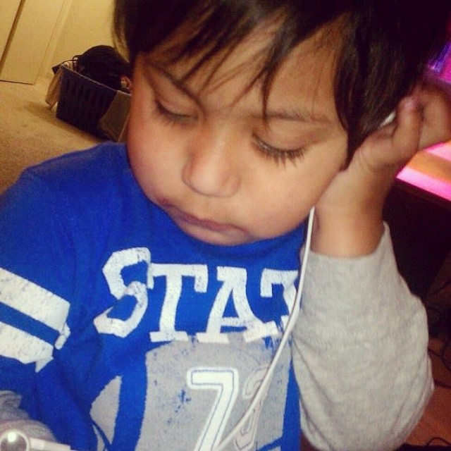
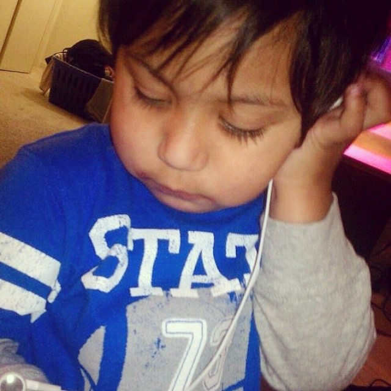

Common Kings | Wade In Your Water

★
Striving to become great at web designing/web devolping.
Wants bigger things in life.
Loves when inner kid takes command.
Finds passion in creating visual stuff.
Don't judge me because I sin differently than you †
Gee
Common Kings | Wade In Your Water
My Kids
 


I took my first breath on Wednesday November 5th 1995 at 5:26am and have 5 siblings. Growing up as a child I had everything I could ever want. Except what I really wanted was family. My mom and dad split and he fell into some legal problems. Bam there I was 6 years old left without my bestfriend. Dad went to prison for 3 years. I felt deeply saddened there I was alone. Now my mom, well she's the best woman to have ever walked thee earth. Such a wise,intellegent, sensitive yet strong woman. Single mother of 3 and a very hard working woman. At the age of 16 she landed her first job and since then she's been working even as many as 3 at a time. She worked so much that my sister,brother and I never got to see her much. In 2003 she got a full-time postion at FAX(Fresno Area Expres) as a city bu driver. After that we really never got to see her. For 10 years she was what you call a board driver, which meant they drove 6-7 days a week. Board drivers do as much as 16 hours of drive time. There's a 8 yeaar age difference between myself and my mothers 2nd oldest child (I'm the baby). Since my mom landed that sweet paying job we could afford to live somewhere nice and spacious again a four bedroom wasn't cutting it for us. We recloated to the country in Selma to a nice 4bdrm 3ba 2,100sqft home with a pool.